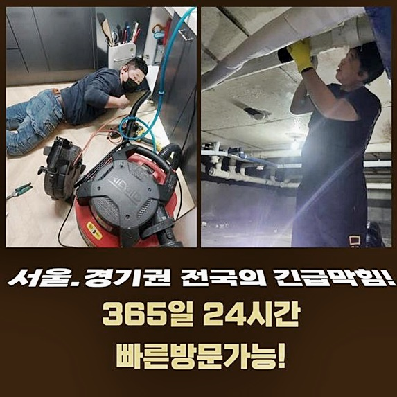
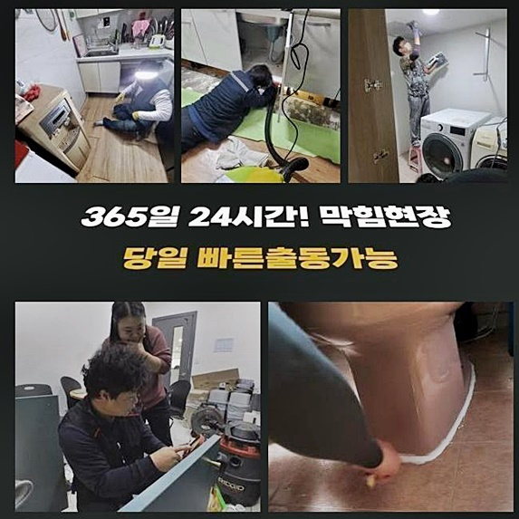
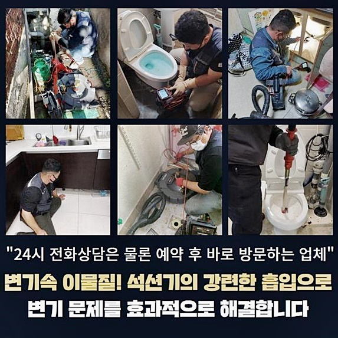
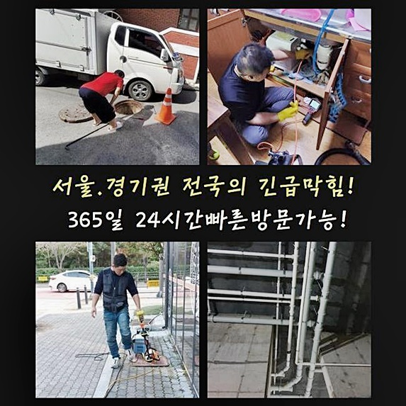
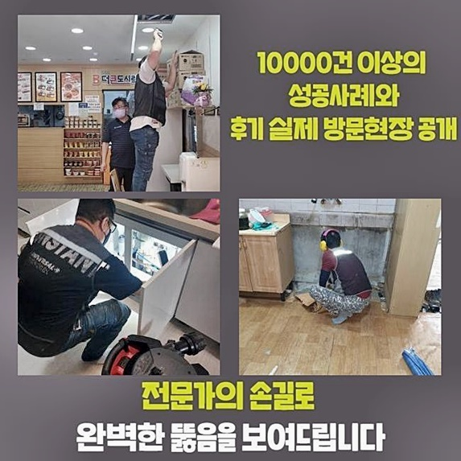
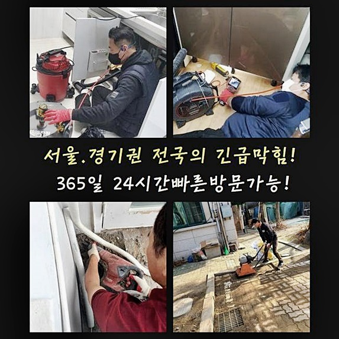
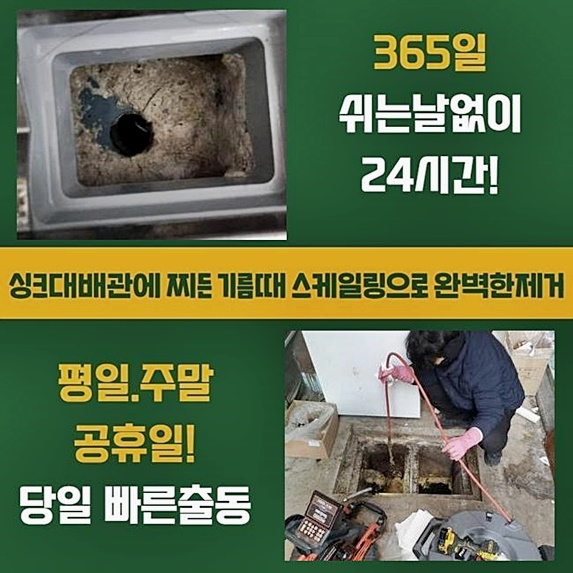

🏠 광진구 중곡동씽크대배수구역류 군자동 하수구뚫어주는업체 누수
용인 싱크대막힘 전문 시공 후기

📋 작업 개요
- 위치: 용인
- 서비스 유형: 싱크대막힘, 하수구막힘, 배관막힘, 집수정막힘, 누수수리, 역류해결, 뚫는업체, 배관청소, 고압세척
- 작업 일시: 2024. 8. 25. 18:02
- 업체명: 하수구수사대 (010-5615-2118)
🔍 문제 상황
광진구 중곡동씽크대배수구역류 군자동 하수구뚫어주는업체 누수
반갑습니다 조속한내방을 책임지고있는 저희업체에서는 출장비에관해서 요구드리지않고 실패를했을때도 같이적용시켜 수리비를받지 않는답니다
저희들을 호출하시는 여러분들의 만족을위해 12개월동안 무상서비스를 제공드리고있죠
배수관이 막히게되었을때 여러분들께서는 어떤방법으로 뚫어보려고 하시는지요
최근들어 방문했었던 현장사례로 막힌배관을 뚫어내는방법을 알려드리려고하니 참고하신다면 좋은정보 얻어가실수 있으실겁니다
작업난이도가 난잡하다고해서 타업체들에서 해결하지않고 철수하기도해요
저희의경우 최선을다해 작업을진행해 하수구를 뚫어내기위해 애쓰고있죠
고객분의 요청시간에 맞추어서 내방또한 진행하고있죠
오늘현장도 문제없이 다녀올수있었는데요
내방전엔 간단히 해결할수있을거라고 생각하고있었어요
의뢰자께서 현장을촬영해서 보여주신것으로 현장출동전 추측을했어요
그치만 확인해보니 메인관까지 문제를보였던 좋지못한 상황이었죠
내부하수구와 바깥쪽하수구를 전체적으로 세밀하게 작업해서 해결할수있었죠

🔎 원인 분석
💡 전문가 진단: 정밀 진단 장비를 사용하여 슬러지의 고착 여부를 판명하고 타격/세척 작업을 실시했습니다.
다음현장으로 일반적인 가정집을 방문했는데 고객님이 유선으로 설명해주신 내용으로는 욕실배수구쪽 부근에서 물이조금씩 역류하다가 하루지나고 살펴보니 역류까지하며 배수가되지 않았다고하셨어요
긴급한 마음으로 뚫는법을 알아보다가 셀프적인시도를 진행했다고 전해주셨어요
무리하게 시도하다가 물과이물이함께 역류하면서 좋지않은냄새까지 발생하여 상태가 심화된것인데요
이제는 손쓸수없다보니 전문인을 알아보다가 문의하신거라고 하셨답니다
물이역류하는것은 대부분 배관안에서 잔해물들이 투입되고 점점퇴적하며 막히게되는 것입니다
막힘증세를 해결하기위해 전문기기들을 구비했습니다
첫번째로 석션기를통해 하수구내부에있는 잔여물을 흡입시킵니다
잔여물흡입을 1차적으로 착수해내지 못한다면 확실한 해결로는 이어질수가없어요
다음과정으로는 하수도내부의 굳어버린 오염물을 샤프트기계로 제거하면됩니다
샤프트도구는 돌처럼굳어진 잔해물질을 분쇄하는 기계입니다
작업할때 항시 요구되는 기기를 말씀드려볼게요
막힘이일어난곳을 찾기위하여는 배관카메라가 필요합니다
내시경카메라를 투입하면 하수구내부 안쪽까지 살필수있기에 정확히 막힌문제를 짚어낼수있어요
내시경기기로 문제를확인하니 화장실쪽과 이어져있는 하수구에도 증상이보이는것을 확인이가능했죠

🔧 작업 과정
외부쪽으로 장소를옮겨 집수정뚜껑을 들추니 오염물이가득차 넘칠것같았죠
막힘증세의 원인인만큼 스케일링작업을 착수하고자했어요
입구에들어찬 물을흡입한뒤 내부작업을 진행하기로했죠
제거해보면 예상과는달리 양이많기에 시간이걸릴수 있답니다
하지만 이 과정이 중요한 단계이니 다 빨아들일 수 있도록 했습니다
하수구입구 주변이 보이기시작해 하수구안속 진입이 가능하게끔 뚫어주는 전동스프링도구를 써서 막힌곳을 통수시켰죠
통수를해준뒤 고압청소과정을 진행하면되는데 높은압으로 오염물쪽에 물을쏘게되는 것인데요
고압세척기계는 다양한기계중 전문가의 손길이필요한 기기입니다
강한압력으로 물을쏘다보니 하수구손상이 일어날수있기 때문이죠
고압세척이 안전하게 마무리된다면 찌꺼기와 이물들이 떨어져나가게 되는것이죠
하수구벽에서 이물을 떨어뜨린뒤 필수과정으로 진행되는것은 석션장비로 잔여물을 빨아올리는 작업입니다
스켈링과정을 마치고난뒤에는 깔끔해졌는지 내시경기계로 배관을 살펴보는데요
소량의오염물이 보였기에 한번더제거해 완벽히 마무리했죠
확실하게 물빠짐이 이루어지는지도 확인해드리고있어요
고객분과함께 물빠짐상태까지 확인한후에 마치고있으니 걱정하지않으셔도 된답니다
막혀있는배관을 뚫지않고 방치하실경우 2차문제로 발발되어 역류문제나 누수문제까지 발발될수있으므로 문제를발견한즉시 대처해보실것을 추천드려요
날카로운물건으로 배관을후비는 행동들은 손상으로 이어질수있으므로 과도한조치는 삼가해주세요!
재차 말씀드리지만 혼자서 무리하게 작업하시면 문제증세가 심해질수있으므로 삼가해주시길 바래요
상가건물이거나 영업시설이라면 주기적인 점검을통해 예방하시는게 좋은방법중 하나입니다
오늘일러드린 정보처럼 확실한해결을 하고싶다면 막히게된 원인에대하여 확실하게 짚어내서 방법을찾는게 중요하답니다
막힘현상에 대해서 방치하지말고 전문가를통해 해결해보세요!


✅ 작업 완료
전문가를 호출할때 살펴보셔야할 사항에대해 알려드려보자면 첨단장비를 여러가지로 갖춘상태인지와 작업비에대해 수리에 착수하기전에 공개하는지 체크해야해요
저희는 작업장소에 방문한뒤 증상을확인한후 수리금액을 고지드리고 고객님이 동의를해야지만 착수하고있으니 안심해도 괜찮아요
1시간안으로 내방해드릴수있고 작업계획에있어 투명한 방법으로 보여드리기때문에 우려마시길 바래요
저희한테 의뢰주신다면 믿음에 보답하게끔 성심성의껏작업해 뚫어내는결실로 보여드리겠습니다
이밖으로도 궁금한점이 있다고한다면 편하실때 아무때나 전화주셔서 여쭈시면 상세하게 응대해드릴게요
저희의글이 도움이 되었을지는 모르지만 이만 마치도록할게요! 감사합니다!




⚠️ 베란다 누수 및 방수 관리 방법
- ✅ 비가 많이 올 때 창틀 주변이나 아래층 천장에 얼룩이 생기는지 정기적으로 확인해 보세요.
- ✅ 우수관 주변 실리콘 마감이 들뜨거나 깨진 틈새가 있는지 손상 여부를 수시로 체크하세요.
- ✅ 베란다 바닥 타일의 줄눈(메지)이 소실되면 그 틈으로 물이 침투하여 누수가 유발됩니다.
- ✅ 누수 의심 증상 발견 시 방치하면 아래층 손실이 커지므로 즉시 전문가의 진단을 받으십시오.
💡 핵심 정리
- 확실한 장비 작업(내시경 점검 및 샤프트 스케일링)으로 원인을 뿌리 뽑습니다.
- 작업 후 1년 이내에 동일한 부위 재발 시 100% 무상 A/S 서비스를 보장합니다.
- 서울 · 경기 · 인천 전 지역에 24시간 언제든 긴급 출동할 수 있도록 항시 대기 중입니다.
❓ 자주 묻는 질문 (FAQ)
🚨 용인 싱크대막힘 문제로 고민이신가요?
정확한 원인 진단과 확실한 시공으로 재발 없는 해결을 약속드립니다.
24시간 긴급 출동 | 서울 · 경기 · 인천 전지역 | 1년 내 재발 시 무상 A/S